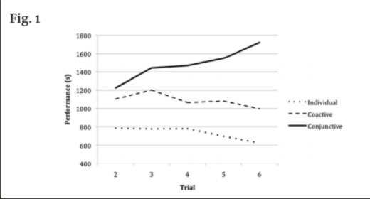

Key Insight
- Users want to exercise together or in groups in a way that is engaging and encourages accountability and
camaraderie.
Depth of Insight
User Needs
- Users want to exercise with others for a variety of reasons. Some would like a partner for outdoor workout
safety while others prefer a partner for accountability, camaraderie, competition, and social networking.
User Goals
- Users want to exercise in a way that supports accountability, consistency, and camaraderie with others to
build healthier habits over time.
User Challenges
- Users may face challenges such as failing to find a compatible partner, being restricted by pandemic
policies, failing to follow through with exercise itself, and more.
Grounding Evidence
- In the interviews, interviewees listed accountability, social networking, competitive spirit, and safety as a
few
reasons why they would prefer exercising with a partner.
- Irwin, B.C., Scorniaenchi, J., Kerr, N.L. et al. Aerobic
Exercise Is Promoted when Individual Performance Affects the Group: A Test of the Kohler Motivation Gain Effect.
ann. behav. med. 44, 151-159 (2012). https://doi.org/10.1007/s12160-012-9367-4
- This research paper concluded that “across sessions, conjunctive condition participants exercised
significantly
longer (M=21.89 min, SD=±10.08 min) than those in coactive (M=19.77 min, SD=± 9.00 min) and individual (M=10.6
min,
SD=±5.84 min) conditions (pɘ.05)”, which is also supported by Figure 1 below.

- Figure 1: This table represents the athletic performance of individuals who were tasked with exercising alone
(individual), exercising with a partner
independently (coactive), and exercising with a partner where the last person standing determined performance
readings (conjunctive).
- Wing RR, Jeffery RW. Benefits of recruiting participants with friends and increasing
social support for weight loss and maintenance. J Consult Clin Psychol. 1999 Feb;67(1):132-8. doi:
10.1037//0022-006x.67.1.132. PMID: 10028217.
- This research paper concluded that “in those recruited alone
and given SBT [(standard behavioral treatment)], 76% completed treatment and 24% maintained their weight loss in
full from Months 4 to 10 … [while] among those recruited with friends and given SBT plus social support, 95%
completed treatment and 66% maintained their weight loss in full.”